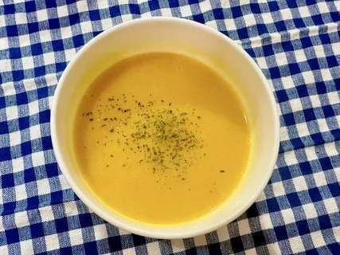
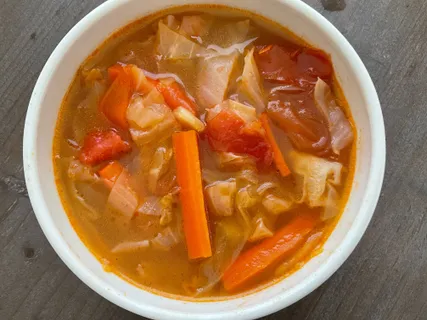
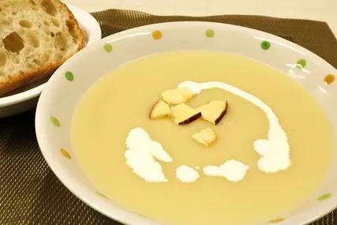

湯品選單
溫暖養身的湯品選擇，精選優質食材慢熬而成。
南瓜濃湯
109元
南瓜濃湯是一種世界各地都非常普遍且受歡迎的湯品，尤其在秋季和冬季。它以其溫暖的色澤、絲滑的口感以及天然的香甜而聞名，是一道兼具營養和療癒效果的料理。
鄉村蔬菜濃湯
99元
以番茄為基底，加入多種時令蔬菜熬煮而成的濃湯。它結合了番茄的酸甜清爽和多種蔬菜的豐富營養，是一種健康且風味飽滿的湯品。
蘋果濃湯
109元
蘋果濃湯是一道獨特且風味令人驚喜的西式湯品。與傳統的南瓜或番茄濃湯不同，它將水果的天然甜味和清爽酸度融入濃郁的湯底中，創造出層次豐富、口感絲滑的味覺體驗。